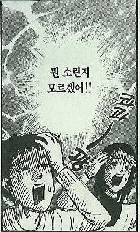
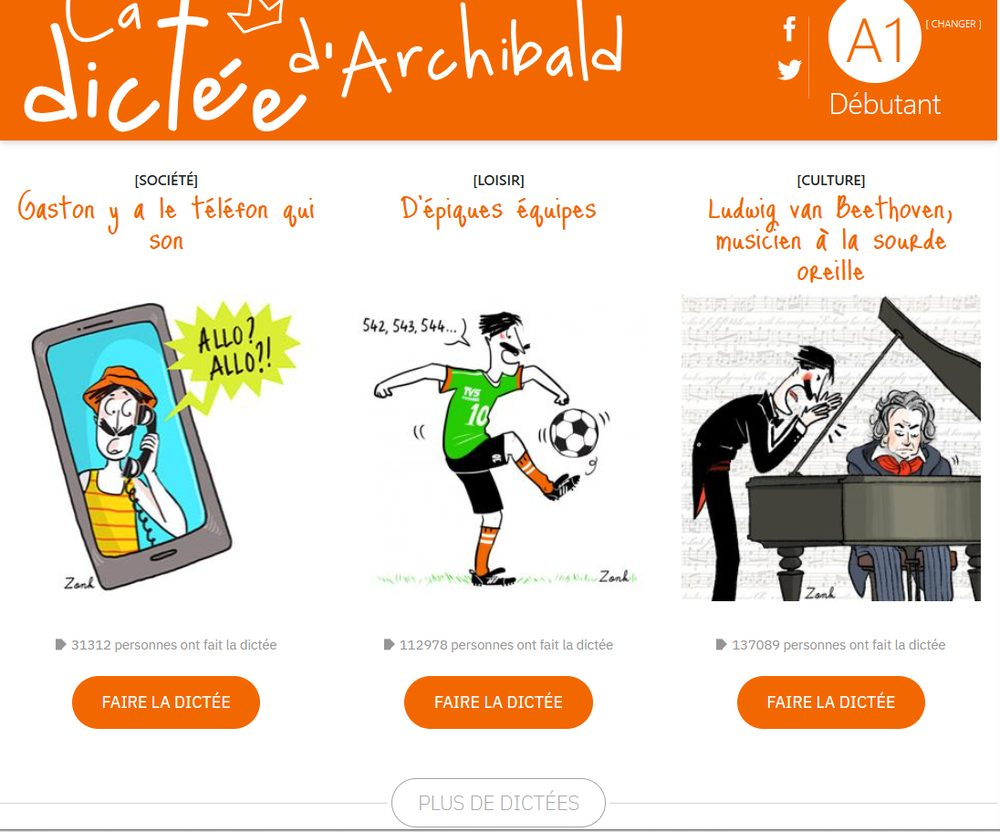
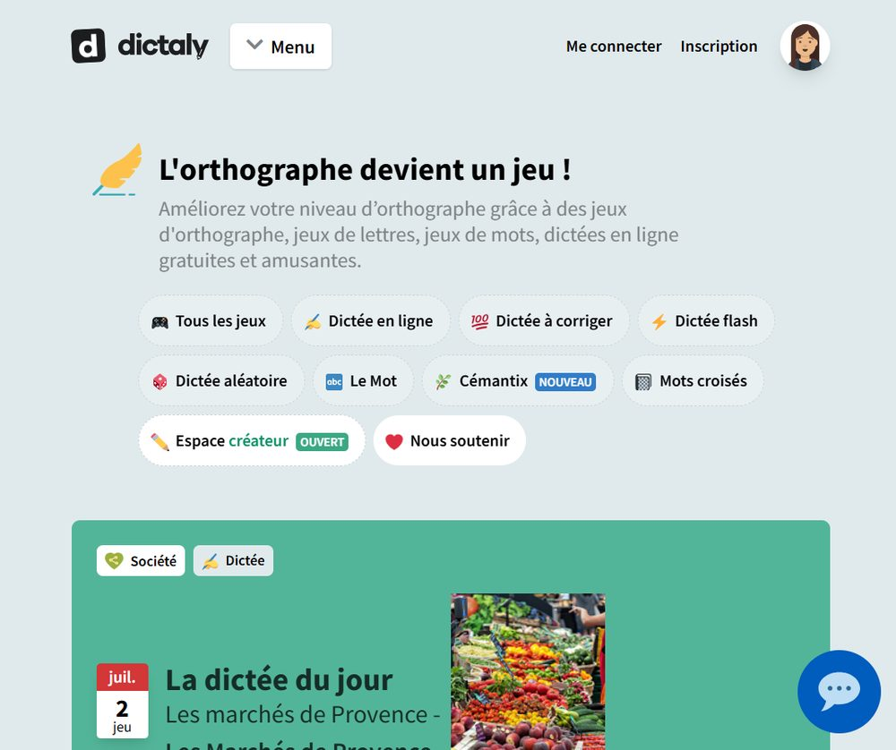
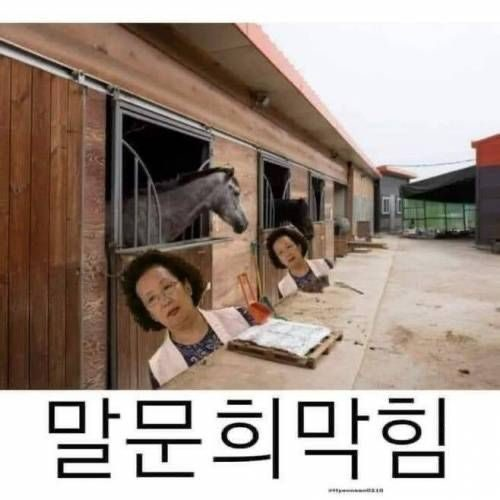
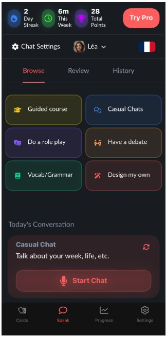
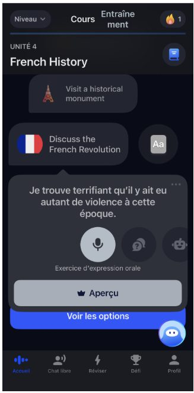

🛠️ 나만의 노하우
프랑스어 받아쓰기,
아이들보다 어른이 더 많이 틀리는 이유
매일 조금씩 이것만 꾸준히 하면
프포자 (프랑스어 포기자) 늪에
절대 빠지지 않아요!

먼저 읽는 요약
프랑스어 받아쓰기, dictée [딕떼]는 프랑스 초등학교부터 배우는 정규 훈련입니다. 같은 소리가 여러 철자로 쓰이는 언어라서, 귀로만 들어서는 쓸 수가 없거든요.
- 딕떼가 무엇이고 왜 프랑스어에 필요한지
- 어른이 아이보다 더 많이 틀리는 이유
- 연습할 수 있는 곳, TV5와 Dictaly
- 말하기는 AI 도구로 양을 쌓는 법
프랑스어 받아쓰기, 딕떼(dictée)는 프랑스 초등학교부터 배우는 정규 훈련입니다. 같은 소리가 여러 철자로 쓰이는 프랑스어에서는 귀로만 들어서는 쓸 수가 없기 때문이에요. 어디서 연습할 수 있는지, 그리고 말하기까지 어떻게 이어지는지 정리했습니다.
지난 이해편에서는 프랑스어를 배울 때 빠지기 쉬운 두 가지 함정을 짚었어요. 첫 번째, 들리는 대로 읽으려는 습관. 두 번째, 쓰기보다 말하기를 먼저 하려는 접근.
이해편에서 말했듯, 프랑스어는 눈으로 읽는 언어와 귀로 듣는 언어가 다르게 작동해요. 같은 문장도 쓰인 것과 발음되는 것이 다른 경우가 많아서, 쓰기 감각이 먼저 잡혀 있어야 말하기도 따라와요.
프랑스어 받아쓰기, 딕떼란 무엇일까
Dictée [딕떼]는 프랑스 학교에서 초등학교부터 정규 과목으로 배우는 훈련이에요. 선생님이 문장을 읽으면 학생들이 받아 적고, 철자와 문법을 채점 받아요. 영어권 학생들에겐 낯선 개념이지만, 프랑스어에서는 지금도 핵심 학습법이에요.

왜 프랑스어에서 특히 중요할까
프랑스어는 같은 소리가 여러 철자로 써져요.
예시 1
/o/ 소리 하나만 봐도 o, au, eau, ô 네 가지가 돼요.
beau 아름다운, au ~에, eau 물 이 모두 같은 소리예요.
예시 2
C'est vrai. 이건 사실이야, 이 말이 맞아
비교적 쉬운 문장인데도 입문자라면 순간적으로 어떤 철자인지 헷갈릴 수가 있습니다.
ses / ces / s'est / sait + vrai 처럼 다양하게 쓰여질 수 있음
귀로만 들어서는 어떻게 써야 하는지 알 수 없어요. 그래서 프랑스어 받아쓰기, dictée [딕떼]가 단어 암기와 철자 감각을 동시에 잡아줘요.
프랑스 어른들도 어려워하냐고요? 당연히 그래요. 프랑스에는 받아쓰기 퀴즈 프로그램이 TV에 나올 정도예요. 우리나라의 "우리말 겨루기"처럼요.
교육부 장관 에두아르 제프레이는 프랑스 수능인 바칼로레아를 앞두고, 학생들의 기초학력 강화를 명목으로 철자 오류에 대해 엄격한 기준을 적용하겠다고 강조했습니다.
문제는 6월에 방송된 방송에서 "환영"을 뜻하는 프랑스어 accueil 과 "딜레마"를 뜻하는 dilemme 의 철자를 쓰는 테스트를 진행했는데, 화이트보드를 지웠다 쓰며 딜레마 단어의 철자도 틀리게 적어 크게 논란이 되기도 했어요.
어디서 연습할까, TV5와 Dictaly
프랑스에는 초등학교부터 일반 사람들이 보는 학습 자료, 사이트들이 굉장히 많답니다.

전통적인 레퍼런스는 바로 TV5의 La Dictée d'Archibald 입니다. A1부터 C1까지 난이도별로 콘텐츠가 잘 구성되어 있고, 자신의 수준과 관심사에 맞는 딕떼를 쉽게 찾을 수 있습니다. 무엇보다 단순히 정답만 보여주는 것이 아니라 오류를 설명해 주기 때문에 듣기와 철자, 문법을 함께 연습하기에 좋은 사이트입니다.

중급으로 넘어가거나 손 놓았던 프랑스어를 손볼 때는 Dictaly 입니다. 원래 프랑스인들의 맞춤법과 철자 실력 향상을 위해 만들어진 사이트이지만, FLE 학습자를 위한 콘텐츠도 함께 제공하고 있습니다. 여기에는 철자 오류를 찾는 Dictées à corriger 처럼 다양한 유형의 딕떼를 제공하고, 문법과 활용 연습까지 함께 할 수 있어 반복 학습하기 좋습니다.
머릿속으로만 문장을 만들면 생기는 일
한국인들의 아쉬운 프랑스어 공부 방법, 마지막 세 번째입니다. 머릿속, 입 안에서만 문장을 만들기. 사실 이 세 번째 함정은 첫 번째, 두 번째와 직접 연결돼 있어요.
소리를 못 잡으면 → 쓸 수가 없고
쓸 수 없으면 → 말하기도 막혀요.

한국 학생들이 프랑스어 말하기를 특히 어려워하는 이유가 있어요. 영어와 달리 드라마, 유튜브, OTT에서 프랑스 콘텐츠를 접하기 쉽지 않거든요. 즉 프랑스어 쉐도잉 소재 자체가 부족해요!
말하기는 AI 도구로 양을 쌓기
그래서 지금 당장 쓸 수 있는 방법 두 가지를 소개할게요.
ChatGPT 롤플레이. ChatGPT에게 이렇게 입력해보세요.
Tu es un serveur dans un café parisien. Je suis un client. Parle-moi uniquement en français, niveau débutant. Corrige mes erreurs à la fin de chaque échange.
주제를 정하고 → AI 시연을 보고 → 역할극으로 연습하고 → 피드백을 받는 흐름이에요. 음성 모드(Voice Mode)까지 쓰면 듣기와 말하기를 동시에 훈련할 수 있어요. "niveau intermédiaire"로 바꾸면 수준을 높일 수도 있고요.
언어 전문 앱. 두 가지를 추천합니다.

Langua 앱은 문화 콘텐츠 기반이에요. 배운 표현을 AI 튜터와 맥락 있는 대화로 연습합니다.

Speak 앱은 카페 주문, 비즈니스 미팅 등 상황별 시뮬레이션을 제공합니다. 앱 환경 언어를 영어로 설정해야 프랑스어 코스가 열려요. 짧은 시간 안에 교정된 스피킹을 반복하는 구조라 입 근육이 빠르게 기억해요!
또한 제가 프랑스어 학생들에게 강조하는 것은, AI와의 즉흥적인 대화로 틀리더라도 즉흥적으로 말해보는 연습을 해보라는 거예요.
프랑스어를 배우면서 막히는 자리는 보통 비슷해요.
- 소리와 글자가 다르다는 걸 인식하기 → 이해편
- 프랑스어 받아쓰기로 쓰기 감각 잡기 → 실전편 ①
- 말하기는 AI 툴로 부담 없이 양을 쌓기 → 실전편 ②
이 세 가지의 프랑스어 공부 방법만 제대로 훈련하면, 효과적으로, 무엇보다도 지치지 않고, 즐기면서 프랑스어를 공부하실 수 있을 거예요.
특히 이 중에서, 프랑스어 받아쓰기는 시험을 위한 훈련이 아니에요. 소리와 문자 사이의 연결을 몸이 기억하게 만드는 과정이에요. 오늘 딱 한 문장부터 시작해봐요.
김두우리, 16년차 프랑스어 FLE 전문 코치
한국 학생들이 어디서 막히는지 아는 사람이 씁니다. 1:1 맞춤 수업과 한불 통번역을 합니다.이력 보기
관련 칼럼